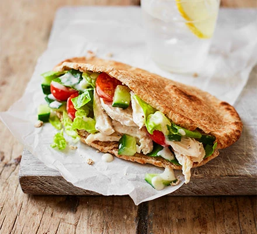

This is a list of all the ingredients needed for the pitta bread recipe.
This is a list of all the nutritional information for this pitta bread.
This is a list of all the steps needed to make a delicious pitta.